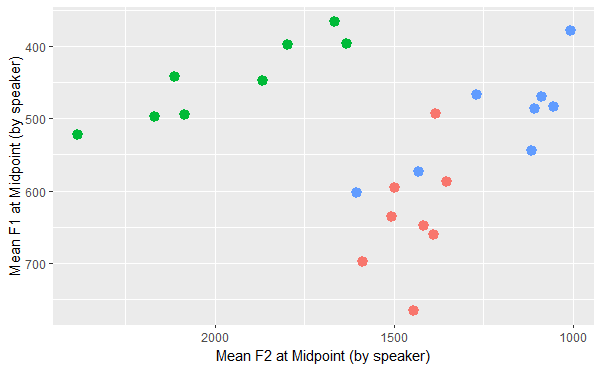
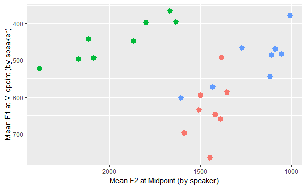

Enenlhet vowel research
This project includes three phonetic studies of the acoustics of Enenlhet vowels. Analysis is ongoing.
This project uses the Enenlhet language documentation corpus to perform a series of corpus studies investigating the acoustics of Enenlhet [tmf] vowels. The corpus includes about 3.5 hours of naturalistic speech (narratives and interviews), recorded, transcribed in Enenlhet and translated to Spanish by Raina Heaton and Manolo Romero. These data were force-aligned using EasyAlign, a Praat plugin. The alignment was untrained, as there is no trained acoustic model of Enenlhet; the alignment used the Spanish with seseo model. Alignment was hand corrected to accurately represent segment boundaries. A discussion of the accuracy and utility of this untrained forced alignment methodology will be presented at CILLA X at UT Austin in November 2023.
The first of the three studies examines vowel duration using a Linear Mixed Effects model run in R. The model examines the effect of a vowel's position within a word, the word's position with respect to a pause, the voicing of the following consonant, and syllable structure. It also accounts for random variation due to speaker and lexical item. The results of this analysis show that vowels are longer immediately before a pause, as well as in open syllables and before voiced consonants, with some interactions between these variables. The analysis does not find evidence of a fixed stress position or of phonemic vowel length, although sister languages (e.g., Enxet) have been described to contrast long and short vowels. This research was presented as a poster at ICPhS in 2023.
 

The second study of Enenlhet vowels examines vowel quality, as the language has a cross-linguistically unusual vowel inventory of just three vowels: /a, e, o/. A Linear Mixed Effects analysis run in R will examine the effect of preceding and following consonant place of articulation, as well as syllable structure and vowel duration. Preliminary results suggest three vowel categories, with more variation in the F2 dimension than the F1 dimension. There is a high degree of variability overall.
The third study in this project is planned to investigate voice quality in Enenlhet vowels. In particular, I am interested in whether different types of voice quality appear in the corpus, and, if so, whether different types of voice quality map onto different phenomena. For example, does a phonemic glottal stop, or a phrase boundary, consistently appear with a particular type of voicing? Qualitatively, I have observed substantial variation in voice quality in the corpus, but no acoustic analysis of voice quality exists in Enenlhet.
During the course of this research project, I have recruited and trained two undergraduate research assistants, Katie McGhee and Emily Luedke, to assist with data processing and analysis. The insights, assistance, and knowledge they have afforded me in processing and making sense of these data are invaluable. Katie has provided extensive assistance with data processing via Python scripts; the two of us also worked together to troubleshoot segmentation criteria. Emily performed the bulk of the annotation in the corpus over the summer of 2022: a heroic feat. This research is funded by NSF-DDRI No. 2024000; though any opinions, findings, conclusions, or errors in this project are my own and do not necessarily reflect views of the NSF.